| 7 |
LP |
Linear perceptron classifier |
0.000000 |
0.000000 |
106 |
92 |
33 |
19 |
0.848 |
0.736 |
0.762590 |
0.792 |
0.208 |
0.803030 |
1.196143 |
inf |
inf |
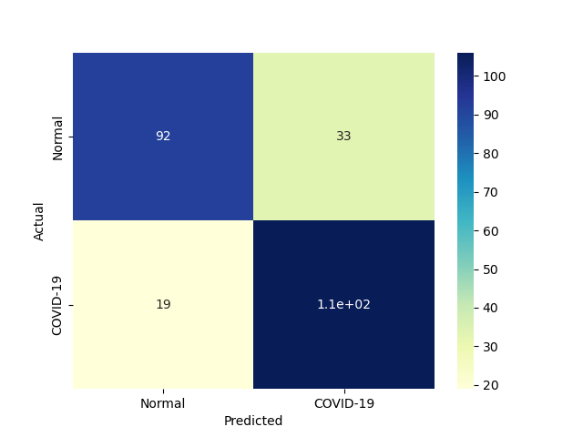 |
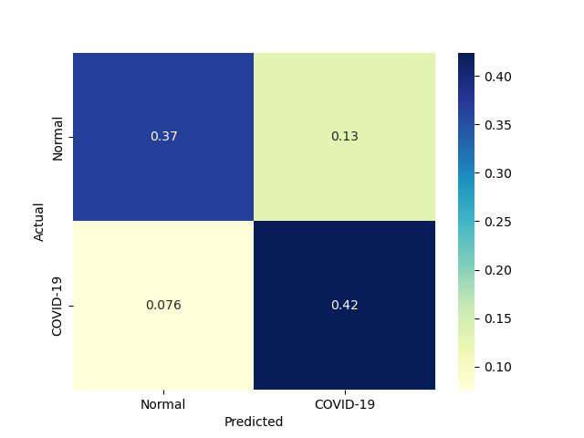 |
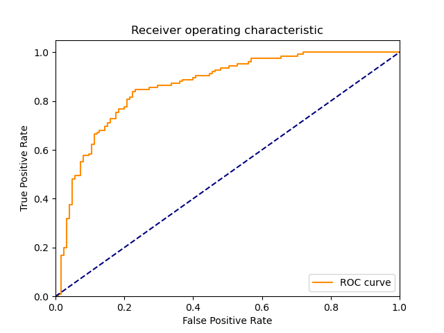 |
| 8 |
MLP |
Multi-layer Perceptron classifier. |
0.718676 |
0.000000 |
109 |
80 |
45 |
16 |
0.872 |
0.640 |
0.707792 |
0.756 |
0.244 |
0.781362 |
1.098096 |
1.087224 |
inf |
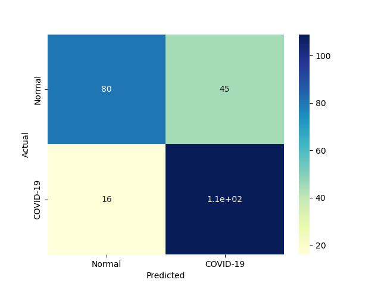 |
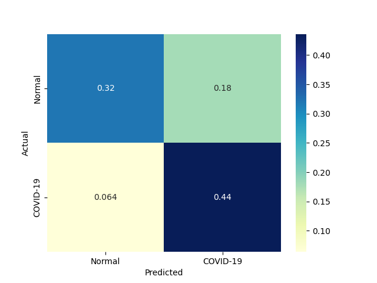 |
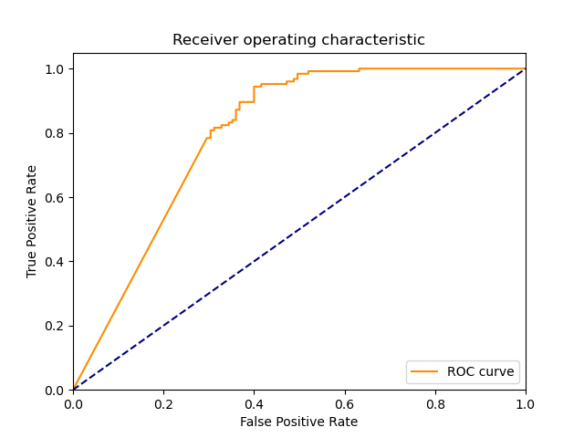 |
| 6 |
NonLinearSVM |
Non Linear Support Vector Classification |
0.015626 |
0.015624 |
118 |
66 |
59 |
7 |
0.944 |
0.528 |
0.666667 |
0.736 |
0.264 |
0.781457 |
1.056983 |
50.008667 |
50.016298 |
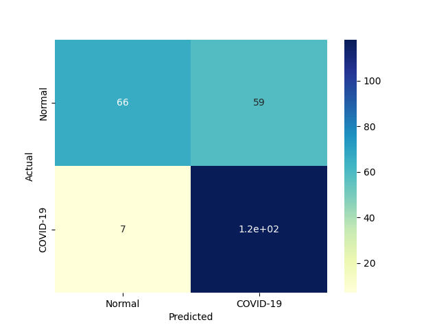 |
 |
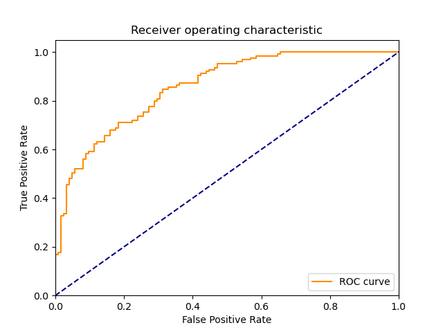 |
| 5 |
LinearSVM |
Linear Support Vector Classification |
0.078009 |
0.000000 |
100 |
85 |
40 |
25 |
0.800 |
0.680 |
0.714286 |
0.740 |
0.260 |
0.754717 |
1.055402 |
9.674697 |
inf |
 |
 |
 |
| 9 |
AdaBoostClassifier |
An AdaBoost classifier |
13.124950 |
0.328246 |
109 |
73 |
52 |
16 |
0.872 |
0.584 |
0.677019 |
0.728 |
0.272 |
0.762238 |
1.034868 |
0.058075 |
2.322153 |
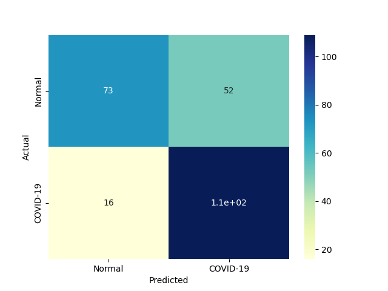 |
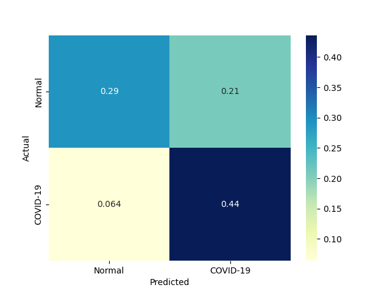 |
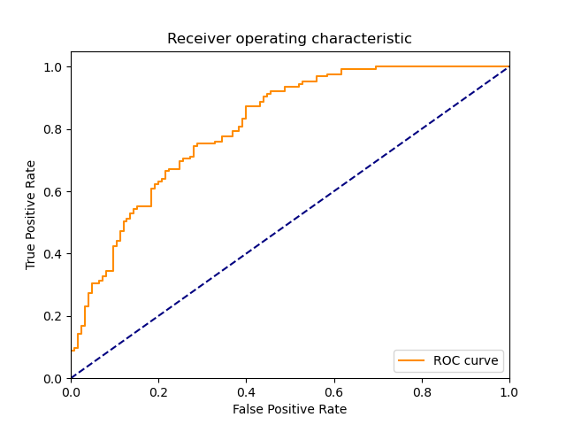 |
| 10 |
GradientBoostingClassifier |
An GradientBoost classifier |
27.515782 |
0.000000 |
113 |
66 |
59 |
12 |
0.904 |
0.528 |
0.656977 |
0.716 |
0.284 |
0.760943 |
1.013082 |
0.027655 |
inf |
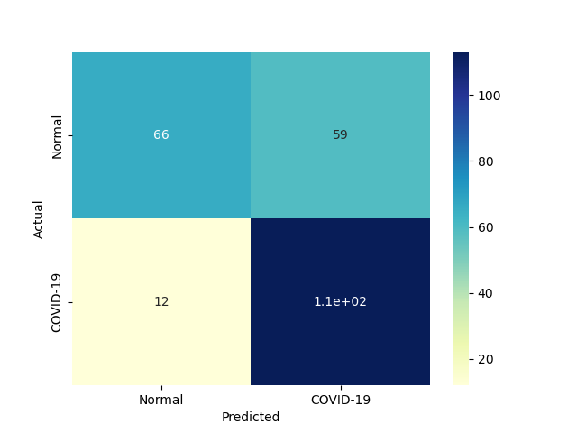 |
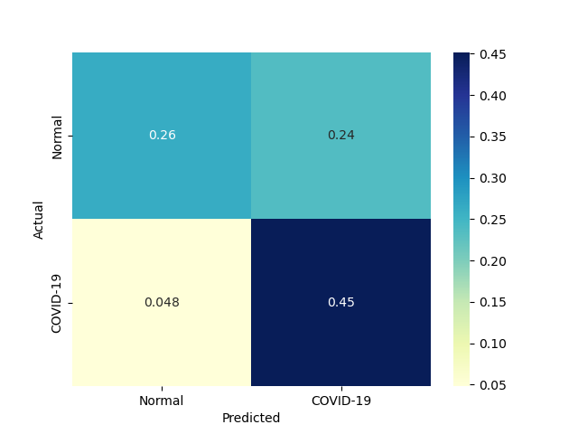 |
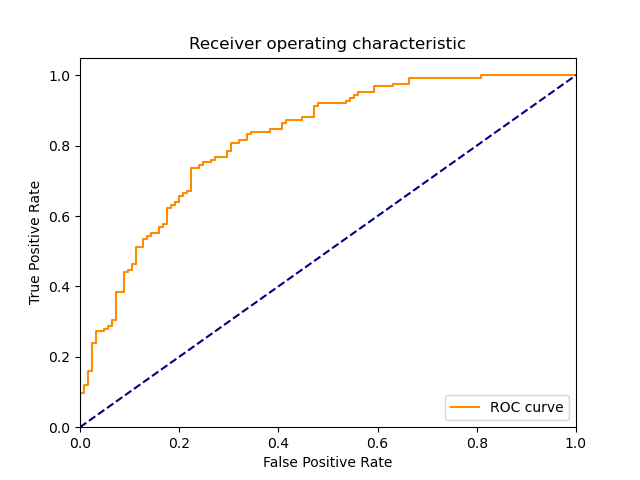 |
| 2 |
BernoulliNBC |
Naive Bayes classifier for multivariate Bernoulli models |
0.000000 |
0.000000 |
108 |
60 |
65 |
17 |
0.864 |
0.480 |
0.624277 |
0.672 |
0.328 |
0.724832 |
0.931322 |
inf |
inf |
 |
 |
 |
| 4 |
KNeighborsClassifier |
Classifier implementing the k-nearest neighbors vote |
0.000000 |
0.015624 |
115 |
52 |
73 |
10 |
0.920 |
0.416 |
0.611702 |
0.668 |
0.332 |
0.734824 |
0.930187 |
inf |
47.031625 |
 |
 |
 |
| 1 |
RealBoost |
An RealBoost classifier |
57.765578 |
0.015639 |
105 |
60 |
65 |
20 |
0.840 |
0.480 |
0.617647 |
0.660 |
0.340 |
0.711864 |
0.909815 |
0.012323 |
45.519731 |
 |
 |
 |
| 3 |
GaussianNBC |
Gaussian Naive Bayes (GaussianNB) |
0.000000 |
0.000000 |
122 |
36 |
89 |
3 |
0.976 |
0.288 |
0.578199 |
0.632 |
0.368 |
0.726190 |
0.882254 |
inf |
inf |
 |
 |
 |
| 0 |
DiscreteNBC |
DiscreteNBC |
0.109405 |
0.109365 |
56 |
66 |
59 |
69 |
0.448 |
0.528 |
0.486957 |
0.488 |
0.512 |
0.466667 |
0.623741 |
4.265504 |
4.267039 |
 |
 |
 |
{kind=link}
{kind=link}
{kind=link}
{kind=link}
{kind=link}
{kind=link}
{kind=link}
{kind=link}
{kind=link}
{kind=link}
{kind=link}
{kind=link}
{kind=link}
{kind=link}